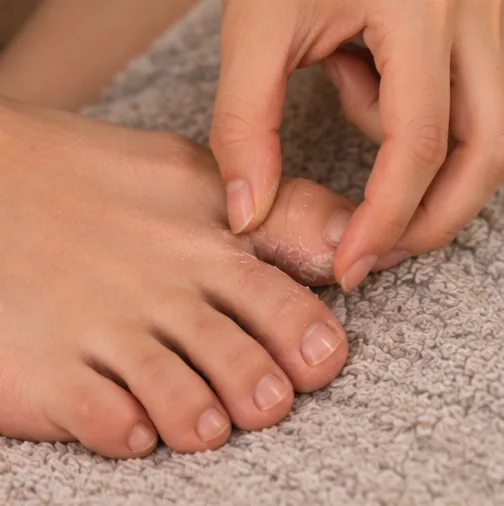
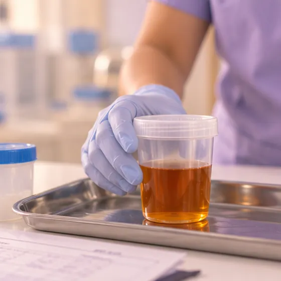
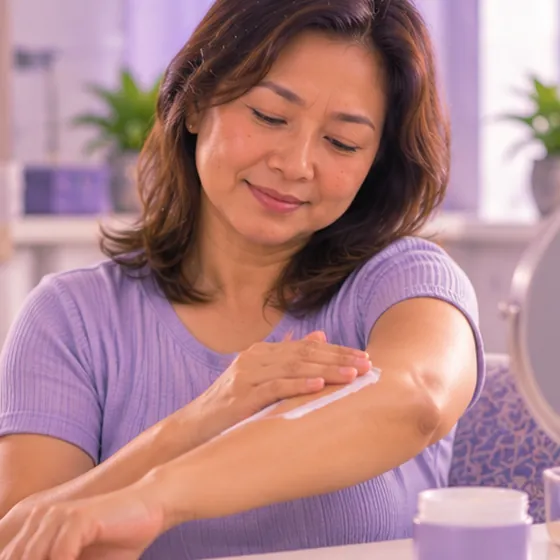

足底发黄
脚底的皮肤看起来发黄或橙黄
这是什么
脚底呈现黄色或橙黄色。这常常是因为吃了很多橙色的蔬果，或脚底皮肤变厚，但有时也可能与肝脏或其他疾病有关。
- 脚底
- 任何年龄，包括婴儿
- 颜色改变，通常不痛
- 就诊科室
- 家庭医生；必要时看肝脏或消化科专科医生
- 多发人群
- 常吃橙色食物的人；婴儿；有肝脏或甲状腺问题的人
- 传染性
- 不传染，但有些原因（如病毒性肝炎）可以传染
- 病程
- 饮食造成的颜色可能在几周里慢慢变淡；其他原因需要看医生
常见表现

皮肤和眼睛发黄黄疸 
尿色深如浓茶深色尿
其他症状
- 脚底（常常还有手掌）发黄或发橙，但眼白仍然是白色
- 脚底的皮肤变厚、变硬或干燥时，也会显得发黄
- 颜色本身不会引起疼痛
为什么会这样
- 吃了很多胡萝卜、南瓜、红薯、木瓜或芒果，可能使皮肤染上黄色
- 脚底皮肤变厚变硬（老茧）或非常干燥
- 肝脏、胆囊或胆汁方面的问题（黄疸），此时眼白也会变黄
- 某些疾病，例如甲状腺功能减退、糖尿病或肾脏问题
- 某些补充剂（如胡萝卜素）或药物可能使皮肤变黄，或影响肝脏
出现这些情况请先看医生
- 皮肤或眼睛发黄，并伴有意识混乱、极度嗜睡、呕血或黑便：拨打999
- 皮肤或眼睛发黄，并伴有高热、寒战或剧烈腹痛：立即去医院
- 眼睛发黄，尿色深，大便颜色变浅，或全身发痒：当天看医生
- 新生儿或小婴儿发黄、非常嗜睡或吃奶不好：请尽快看医生
- 脚底一直发黄，或伴有体重下降、没有胃口或一直很累：请尽快看医生
如果有以上情况，请先看医生，再来做调理。
本页只是一般性的健康资讯。请继续按时服用平常的药物，并继续看医生。
请继续日常治疗
请继续按医嘱服药，并按时复诊。我们的调理是温和的辅助，不能代替医疗。
日常护理

保持皮肤滋润润肤护理 咨询药剂师药剂师建议
更多自我照顾的方法
- 在日光下看看眼白；如果眼白也发黄，请尽快看医生
- 如果常吃很多橙色蔬果，可以吃得更多样一些；颜色可能会慢慢变淡
- 少喝酒，因为酒精会加重肝脏的负担
告诉理疗师
- 肾脏或肝脏疾病
- 糖尿病或皮肤感觉减退
- 怀孕
调理师会在开始前和你确认这一项。
常见问题
足底发黄是什么？
脚底的皮肤看起来发黄或橙黄。脚底呈现黄色或橙黄色。这常常是因为吃了很多橙色的蔬果，或脚底皮肤变厚，但有时也可能与肝脏或其他疾病有关。
足底发黄有哪些常见表现？
皮肤和眼睛发黄；尿色深如浓茶
为什么会有足底发黄？
吃了很多胡萝卜、南瓜、红薯、木瓜或芒果，可能使皮肤染上黄色；脚底皮肤变厚变硬（老茧）或非常干燥；肝脏、胆囊或胆汁方面的问题（黄疸），此时眼白也会变黄；某些疾病，例如甲状腺功能减退、糖尿病或肾脏问题；某些补充剂（如胡萝卜素）或药物可能使皮肤变黄，或影响肝脏
有足底发黄要怎么照顾自己？
保持皮肤滋润；咨询药剂师
AI Body Master 的调理对足底发黄有帮助吗？
调理是温和的无针经络养生辅助，不能治疗或治愈足底发黄，也不能代替药物或医生。开始前请告诉理疗师。
相关疾病
参考资料: General information based on public health sources such as Mayo Clinic, NHS, Cleveland Clinic and NCBI StatPearls.
页面更新: 2026-11-04